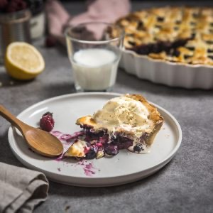
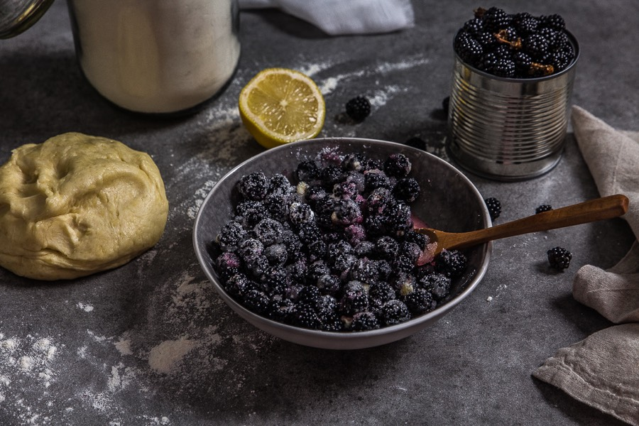
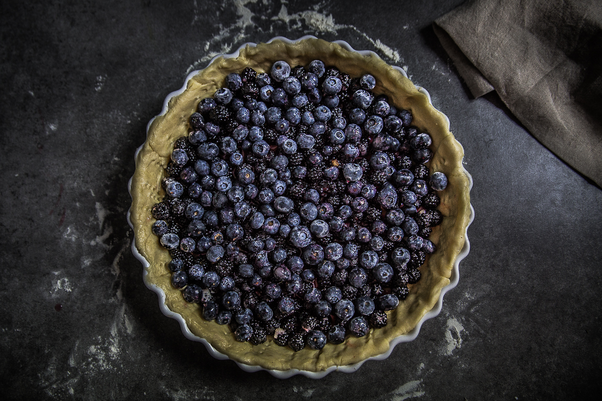
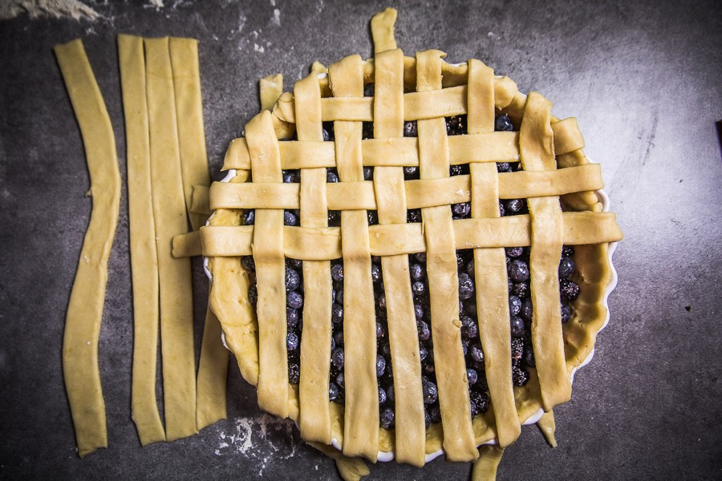
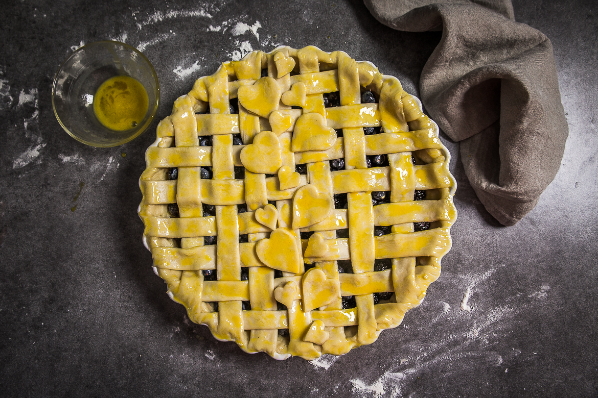

Tarte quadrillée aux mûres

Aujourd’hui je vous retrouve enfin avec cette recette de tarte quadrillée aux mûres et aux myrtilles (facile, rapide et délicieuse)! Depuis le temps que je vous promettais cette recette, me voici enfin :).
Il était temps je crois de publier cette tarte car bientôt il n’y aura plus une seule mûre à cueillir!!! Vous êtes nombreux à me demander où je trouve d’aussi belles mûres et à chaque fois la réponse est la même : je les trouve dans ma rue, dans le parc à côté de chez moi et dans un terrain vague pas loin de la résidence dans laquelle je vis (oui je vis presque à la campagne). Donc pour celles qui n’en trouvent pas, éloignez vous un peu de chez vous, roulez en direction de la campagne la plus proche et je peux vous assurer que vous en trouverez vraiment partout (sinon venez chez moi il y en a assez pour tout le monde^^)!! Avant de publier cette recette j’avais tenu à publier un article sur comment quadriller une tarte alors ne vous étonnez pas si tout n’est pas détaillé dans le corps de la recette, je trouve ça plus simple et plus clair comme ça. Il se peut certainement que pendant la semaine je publie une autre tarte quadrillée mais avec une tout autre garniture alors ne partez pas trop loin! Dans ma tarte quadrillée aux mûres et aux myrtilles je n’ai pas rajouté de sucre. Je ne comprends pas pourquoi les tartes aux fruits ont autant de sucre en plus! Généralement j’aime bien ajouter un peu de cassonade (notamment dans mes tartes rustiques) pour le côté caramélisé que ça apporte. Mais quand je lis une recette de tarte « classique » j’ai l’impression qu’il y a plus de sucre que de fruits alors que finalement les fruits sont déjà naturellement sucrés non? Bon ok, les mûres ne sont pas les fruits les plus sucrés que je connaisse alors je comprends qu’un peu de sucre en plus peut apporter un petit quelque chose. J’ai testé cette recette plusieurs fois avant de vous la proposer (en version mini), et je pense que 80 à 100g de sucre sont largement suffisant si vous décidez d’en ajouter. C’est d’ailleurs généralement la quantité de sucre que je ne dépasse pas dans la tarte à moins que ce soit vraiment nécessaire. A la base, je voulais seulement faire une tarte aux mûres puis je n’en ai pas cueillies assez alors j’ai fait un mix avec des myrtilles et c’était absolument délicieux! Donc à libre à vous de ne mettre que l’un ou l’autre des deux fruits (ou un mix des deux comme ici)!
Bref, je pense que ce qui vous intéresse avant tout c’est la recette de la tarte aux mûres alors c’est parti!
Ingrédients
- Mûres - 400g
- Myrtilles - 350g
- Maïzena - 3 càs
- Jus de citron - 4 càs
- Sucre (facultatif) - 100g
- Pâte à tarte brisée - 2
- Jaune d'oeuf - 1
- Eau - 1/2 à 1càc
Instructions
- Préchauffer le four à 180°
- Laver vos mûres et vos myrtilles
- Dans un saladier, verser les fruits et ajouter la maïzena
- Mélanger et ajouter le sucre (si vous en ajoutez) et le jus de citron
- Bien mélanger en faisant bien attention de ne pas écraser les fruits
- Déposer votre première pâte à tarte dans le fond de votre moule
- Piquer le fond à l'aide d'une fourchette
- Verser le mélange fruit-maïzena-citron-sucre dans le fond de tarte
- Commencer le quadrillage de la tarte (clic)
- Une fois le quadrillage terminé, mélanger le jaune d’œuf à 1/2 càc d'eau (max 1càc)
- A l'aide d'un pinceau, appliquer le jaune d’œuf sur la tarte
- Enfourner 40-45 minutes à 180°
- Se déguste tiède (ou froid) avec une boule de glace à la vanille par exemple (ou sans c'est parfait aussi)
- A vous maintenant 🙂




Les tips de la communauté
Excellente réception avec des compliments sur l'esthétique du décor en pâte et les petits cœurs. Les commentaires soulignent la beauté visuelle et laissent entrevoir un goût délicieux, bien que peu aient testé.
Astuces
- Le décor en pâte avec petits cœurs ajoute une valeur esthétique importante
- La tarte est particulièrement adaptée aux occasions où la présentation compte